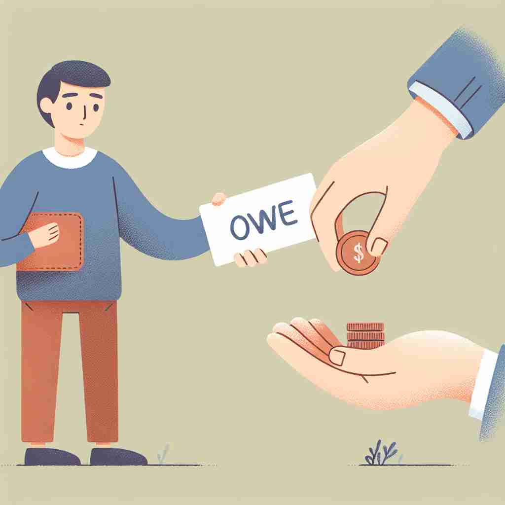

💬 I owe someone money for the books I borrowed. 我欠某人借来的书的钱。

💬 He will owe money for the borrowed cash. 他将欠下借来的现金。
💬 I owe someone money for the books I borrowed. 我欠某人借来的书的钱。
💬 He will owe money for the borrowed cash. 他将欠下借来的现金。
🧠 想象'owe'就像一个看不见的连接，把你和你'欠'的东西联系在一起。无论是金钱、行为还是成就，这种'欠'的概念都贯穿其中。记住这个核心含义，你就能轻松理解和记忆'owe'的各种用法。
🔈 [əʊ]
🗝️ v. to be under obligation to pay or repay someone for something 有义务为某事支付或偿还某人。
🎭 在一个咖啡馆里，朋友A向朋友B借了10美元买咖啡。喝完咖啡后，朋友A认真地对朋友B说："下次我一定会还你。这展现了‘owe’的意思：有偿还某人某物的义务。
💬 I owe the bank a lot of money. 我欠银行很多钱。
🌳 词根 'owe' 源自古英语 'āgan'，意为 '拥有' 或 '应付'，发展为现代英语中的 '欠' 或 '应归功于'。
💡 记忆 'owe' 可以联想到 'own' 的演变，因 'own' 表示拥有，而 'owe' 则表示某种义务或责任（欠款）。
🗝️ v. to feel or be under an obligation to do something for someone 感到或有义务为某人做某事
🎭 在公司里，经理对员工说："这次项目做得很棒，我欠你一个人情。下次有需要帮助的时候，一定告诉我。"这展示了‘owe’的含义：觉得有责任为某人做某事。
💬 I owe you an apology for my behavior. 我对我的行为向你道歉。
🤔 从金钱债务延伸到精神或道德上的"欠"
🗝️ v. to be indebted to someone for something received or experienced 因收到某物或经历某事而感激某人
🎭 在宁静的森林中，徒步爱好者对自然说道："我感受到的一切美好都要感谢这片大自然。我欠这里一份感恩。"展示了‘owe’表示因获得或体验某物而感激某人或某事的含义。
💬 I owe my success to my parents' support. 我将成功归功于我父母的支持。
🤔 表达对他人的感激之情，类似于"欠"人情
🗝️ v. to have a specified quality or thing because of someone or something 由于某人或某事拥有某种特定的品质或东西。
🎭 在实验室里，一名科学家看着成功的实验结果，微笑着说："这一重大发现多亏了我导师的指导，我欠这一切于他的智慧。"这展示了‘owe’的含义：因为某人或某事而拥有特定的品质或事物。
💬 The team owes its victory to the captain's leadership. 团队的胜利归功于队长的领导。
🤔 表示某种状态或特质是由于某人或某事造成的，仿佛"欠"了这种结果